關於宣揚
宣揚電腦引爆實體通路 O2O 革命
整合過去豐富的連鎖店各行業輔導經驗，以 Store Cloud Platform 服務到全球。
深耕實體通路 26 年的宣揚電腦，藉由從產品、服務到商業模式的創新，
以實體店家的發展角度，幫商家順利轉型 O2O 行動商務經營模式，開創全新台灣市場的 O2O 平台。
[ 流通大師 ] 為宣揚電腦自 1991 年發展零售資訊管理系統的主要品牌，
經歷台灣流通服務業逾 26 年的發展史，本著永續服務客戶的精神，
不斷的創新與穩定的系統架構，成為經營者最倚賴也是最佳經營利器，
讓 [ 流通大師 ] 持續成為 POS 業界領導品牌。

26 年
專業 POS 輔導經驗
全通路整合 POS 連鎖 ERP 系統
- 第 十 屆黃金企鵝獎 雲端服務創新競賽榮獲APP組 佳作
- 首 屆海峽兩岸移動資訊化應用大賽榮獲年度最佳民生應用提名獎
- 2014 年黃金企鵝獎 宣揚電腦獲頒經濟部第 21 屆中小企業創新研究獎
整合
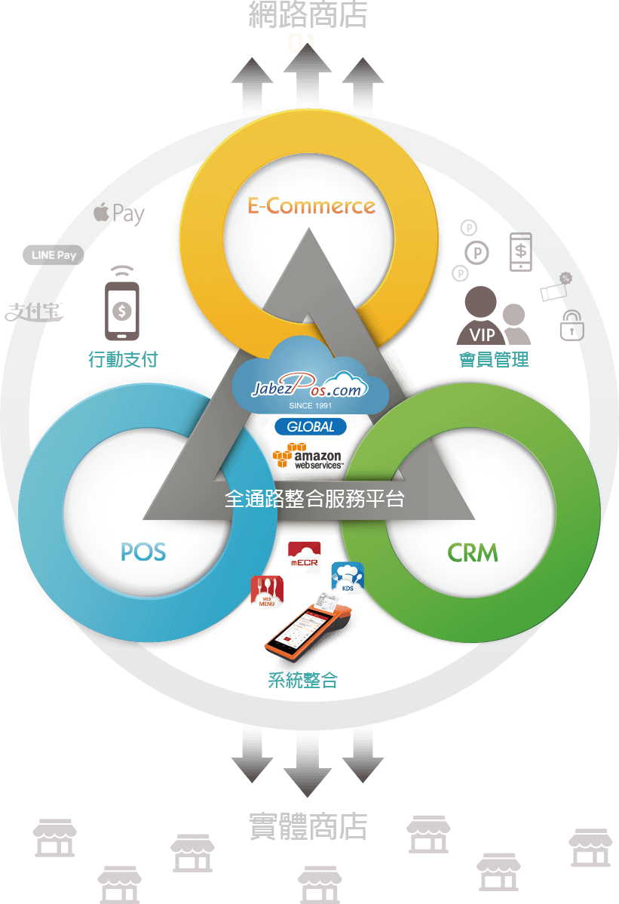
多元支付
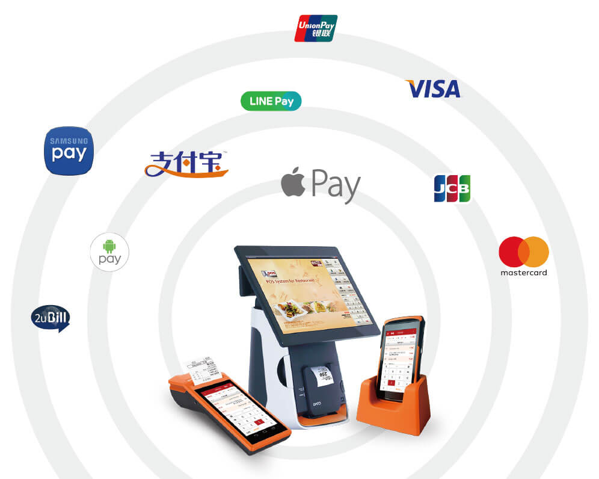
未來展望
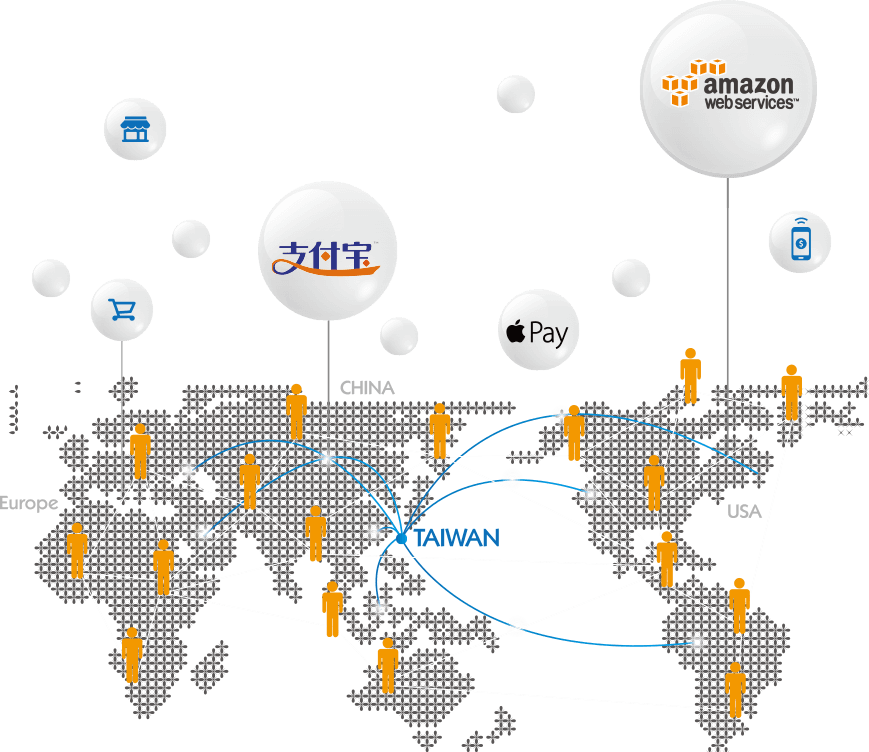
餐飲解決方案
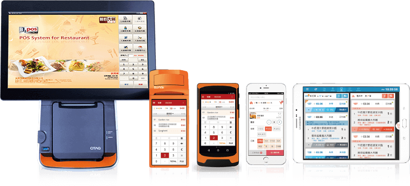
零售解決方案
在地商圈實體零售店大未來
面對零售業電子商務化的大趨勢，
消費者行為改變，造成實體零售業的莫大壓力。
在地的微型銷售店，更要面對困難的提升競爭門檻，
店家都應該好好思考，在這樣的競爭態勢中，
要如何找到適合自己的競爭利器。
- 2017
- 成功拓展美國雲端 POS、新興支付、
雲端點餐市場 (洛杉磯、紐約、舊金山...) - 代理各類行動 POS
- 整合開發解決方案
 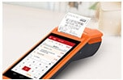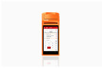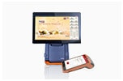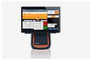
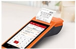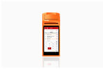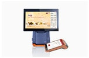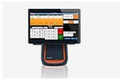 - 2016
- 店聯網全時購物 O2O 服務平台
- 成功經營 台北八大商圈、逢甲夜市、日月潭、墾丁...等商圈
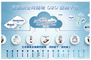 - 2015
- 健康藥妝整合
- 寵物平台
- 經濟部工業局核發服務能量登錄證書
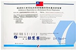 - 2014
- 獲頒 經濟部第 21 屆中小企業創新研究獎
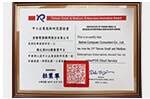 - 2013
- POS 服務雲 獲入選 2013 台北國際電腦展 10 大亮點產品
- BLike 行動支付 App 上市
- 2012
- 再次獲經濟部中小企業處【雲端運算推廣服務計劃】通過
- 獲海峽兩岸移動信息應用大賽【年度最佳民生應用提名獎】
- 獲黃金企鵝獎 APP 類【雲端創新服務競賽佳作及最佳實用獎】
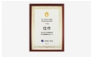 - 2011
- 獲經濟部中小企業處【雲端運算推廣服務計劃】通過
- 與中華電信合作推出【POS雲端流通大師】產品
- 2010
- 與資策會技術移轉【人臉辨識技術】，提案 SBIR 通過
- 開發 Jabezpos.com POS 服務雲平台
- 2009
- 流通大師 BSMS 多國語文版上市
- 供應鏈平台 / 電子發票整合行銷上市
- 獲得經濟部工業局【技術服務機構服務能量證書】
- 2008
- 流通大師餐飲版上市
- 2007
- BSMS / enPOS 門市管理系統產品上市
- 2005
- 流通大師服飾鞋業版，精品百貨賣場版產品上市
- 財務大師整合上市
- 2003
- 舉辦大型研討會，丁丁藥局董事長張藥師熱情站台
- 2002
- 開辦ASP租賃服務方案，嘉惠小型連鎖流通業
- 2000
- 發表全國第一套 Online POS ，獲得丁丁藥局採用
- 1999
- 與訊光合作，研發第三代 IT 技術 ( Web Online ) ERP 系統
- 1997
- 宣揚與 IBM，精業公司共同推動『流通業自動化列車』
- 1991
- 宣揚電腦誕生
- 全台灣第一套 PC POS
台灣專利
賀！宣揚電腦 總經理 黃志成先生
2 0 1 2 年 獲得 台灣專利局 認證
通 過
【主動辨識客層智慧型銷售點(POS)系統】，
並完成領證程序作業。
2 0 1 2 年 獲得 台灣專利局 認證
通 過
【主動辨識客層智慧型銷售點(POS)系統】，
並完成領證程序作業。
黃總經理 早於2010年與“資策會”技轉“人臉辨識系統”， 就投入【主動辨識客層智慧型銷售點(POS)系統】開發。
於2010年成功開發後，立即進行【主動辨識客層智慧型銷售點(POS)系統】的專利申請。
註冊商標
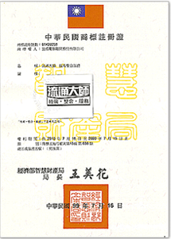
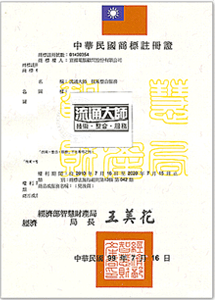
商標註冊號數：01420258
商標權人：宣揚顧問股份有限公司
商標權人：流通大師 整合服務
商標權人：宣揚顧問股份有限公司
商標權人：流通大師 整合服務
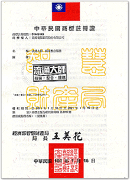
商標註冊號數：01449149
商標權人：宣揚顧問股份有限公司
商標權人：流通大師 整合服務
商標權人：宣揚顧問股份有限公司
商標權人：流通大師 整合服務
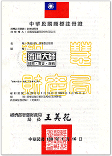
商標註冊號數：01448770
商標權人：宣揚顧問股份有限公司
商標權人：流通大師 整合服務
商標權人：宣揚顧問股份有限公司
商標權人：流通大師 整合服務
得獎獎項
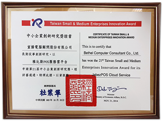
2014年
獲頒 經濟部第21屆中小企業創新研究獎
獲頒 經濟部第21屆中小企業創新研究獎
首屆海峽兩岸移動資訊化應用大賽
宣揚電腦 雅比斯行動收銀
榮獲 “年度最佳民生應用提名獎”
宣揚電腦 雅比斯行動收銀
榮獲 “年度最佳民生應用提名獎”
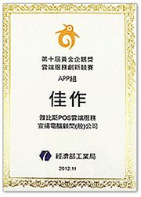
第十屆 黃金企鵝獎 雲端服務創新競賽
宣揚電腦 雅比斯POS雲端服務
榮獲 “APP組 佳作”
宣揚電腦 雅比斯POS雲端服務
榮獲 “APP組 佳作”
證書
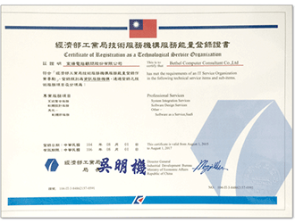
2015年經財團法人資訊工業策進會
通過技術服務能量登錄項目計有：
專業服務項目
(一)系統整合服務
(二)軟體設計服務
(三)其他-軟體即服務(SaaS)
通過技術服務能量登錄項目計有：
專業服務項目
(一)系統整合服務
(二)軟體設計服務
(三)其他-軟體即服務(SaaS)
台北總公司
地址：
10449 台北市中山區中山北路二段112號5樓之5
電話：
(02)2537-5724
傳真：
(02)2531-6002
信箱：
service@bethel.com.tw
交通：
捷運－民權西路站(步行約5分鐘)
公車－搭乘218、220、220公車至台泥大樓(馬偕醫院)站下車(步行約1分鐘)
公車－搭乘218、220、220公車至台泥大樓(馬偕醫院)站下車(步行約1分鐘)
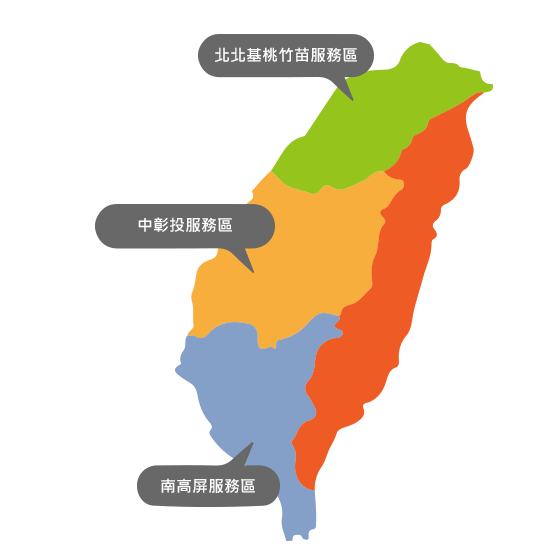
台中分公司
地址：
40255 台中市南區忠明南路 787 號 34 樓 A4
電話：
(04)2265-1869
傳真：
(04)2265-4742
信箱：
service@bethel.com.tw
交通：
公車－搭乘82、101、102公車至「和平國小站」下車(步行約4分鐘)
高雄總公司
地址：
81358高雄市左營區立文路77號11樓之2
電話：
(07)557-8360
傳真：
(07)557-8361
信箱：
service@bethel.com.tw
交通：
捷運－紅線巨蛋站(步行約5分鐘)
公車－搭乘24、301公車至三民家商(博愛二路)站下車(步行約3分鐘)
公車－搭乘24、301公車至三民家商(博愛二路)站下車(步行約3分鐘)
商標權人：宣揚顧問股份有限公司
商標權人：流通大師 整合服務